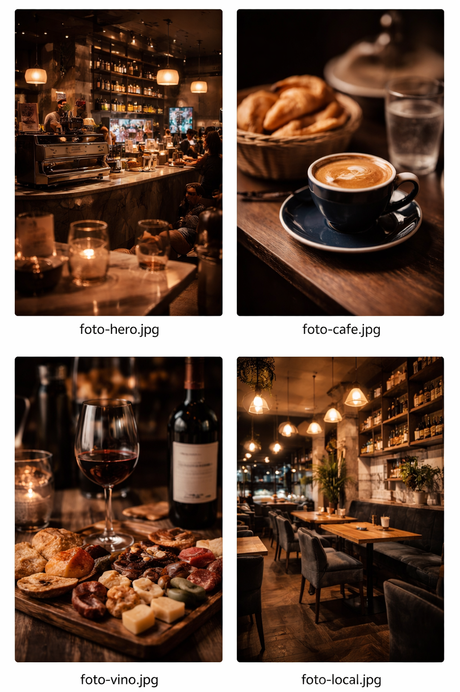

vino · café · encuentros
LOMBARDO
Una vinería boutique donde el vino, el café de especialidad y los buenos momentos se encuentran en un ambiente cálido y elegante.
El espíritu de Lombardo
Lombardo nace como un espacio para disfrutar sin apuro. Un lugar donde el vino, el café de especialidad y la buena compañía se combinan en una experiencia simple pero cuidada.
Inspirado en los wine bars italianos y en la cultura de compartir, Lombardo propone un ambiente elegante, relajado y auténtico donde cada visita se transforma en un momento para recordar.
- vino con identidad
- café de especialidad
- momentos compartidos


Café de especialidad
El buen café también tiene su lugar en Lombardo. Trabajamos con café de especialidad para ofrecer una experiencia simple, cálida y cuidada en cada taza.
Desde un espresso intenso hasta un flat white perfectamente equilibrado, cada café se prepara respetando el origen y la calidad del grano.
flat white
capuccino
latte
café con algo dulce
Un buen café siempre encuentra su momento.
La cultura del vino
El vino es parte central de la experiencia Lombardo. Una selección pensada para descubrir, disfrutar y compartir sin formalidades.
Nuestra propuesta combina etiquetas seleccionadas, vinos por copa y recomendaciones pensadas para que cada visita sea diferente.
vinos por copa
etiquetas boutique
recomendaciones de la casa
descubrir nuevos sabores
El vino se disfruta mejor cuando se comparte.

Experiencias Lombardo
Más que una vinería, Lombardo es un punto de encuentro para vivir momentos especiales.
Catas guiadas, encuentros entre amigos, eventos privados y noches donde el vino y la conversación son protagonistas.
Catas de vino
Eventos privados
Encuentros en el balcón
Happy hour
Noches especiales
Cada encuentro tiene su propio sabor.
La atmósfera Lombardo
Un espacio pensado para disfrutar del vino, del café y del momento.



Un lugar para quedarse.
Te esperamos en Lombardo
Un espacio donde el vino, el café y los encuentros se disfrutan sin apuro.
- Ubicación
- Pueblo Esther, Rosario, Santa Fe
- Horarios
- Martes a Domingo · 08:00 – 13:00 / 17:00 – 00:00
- Contacto
- Escribinos
Venís por una copa… y te quedás por el momento.